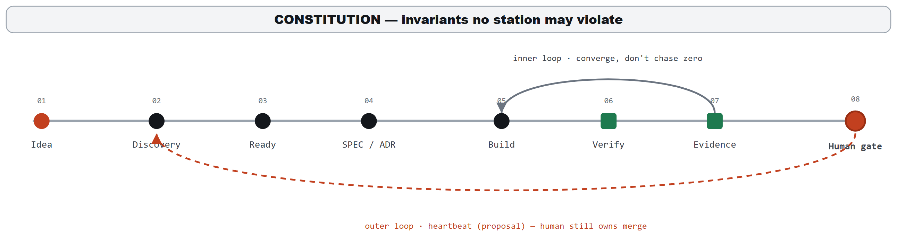
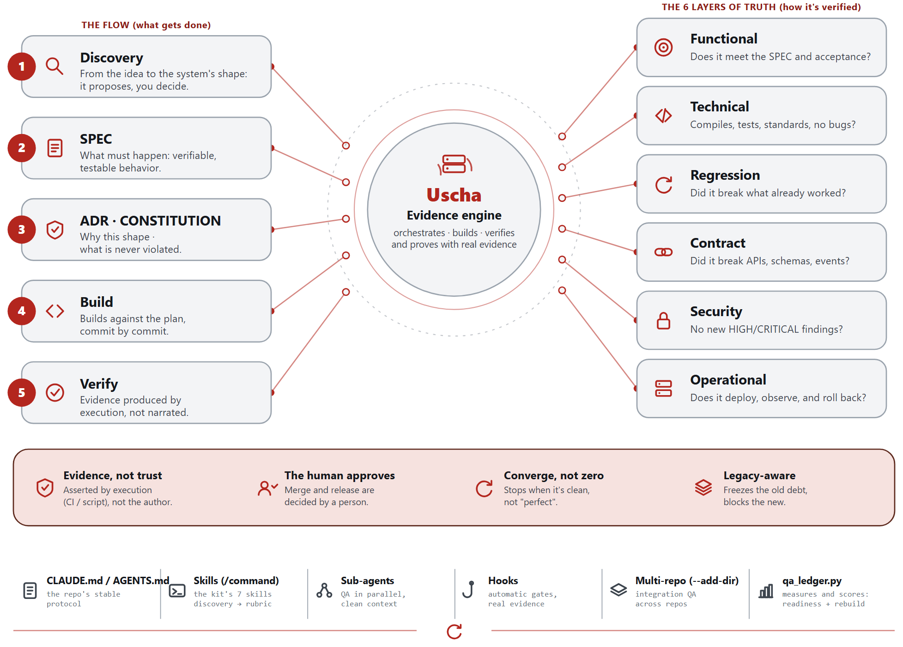
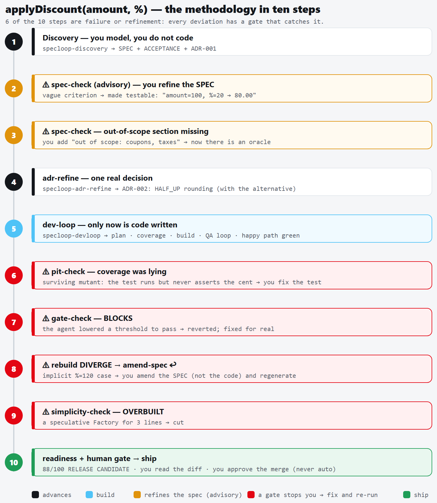

info@uscha.dev · github.com/andresmassello · linkedin.com/in/amasselloLLM coding agents fail in two well-documented ways: when instructions are underspecified they guess instead of stopping, and when a verification signal is visible they optimize the signal rather than the requested outcome. We present Uscha, a methodology for specification-driven development with LLM coding agents organized around a single discipline: gates that read facts block; gates that guess over prose advise. The methodology contributes (i) two specification fronts — a greenfield front where the agent proposes the system shape under one-question-at-a-time human approval, and a brownfield front where the agent may only extract verifiable facts, never author a specification of existing behavior; (ii) a deterministic evidence ledger with a two-tier record contract in which measured artifacts always override agent self-reports; (iii) a family of executable fact gates (golden non-authorship, gate-integrity, simplicity budgets, per-criterion measured acceptance, regression capture, a derived — never self-declared — workflow state machine) and a structured-guess layer (versioned qualitative rubrics with mandatory evidence, and deterministic clone-vs-repository detection that surfaces the duplication a diff-local simplicity gate cannot see) that advises by default and gates only by explicit human declaration; and (iv) a strict placement of the human at three fixed points: approving the shape, approving the golden baseline, and merging. The methodology also applies its own Lean discipline reflexively: a meta-invariant that keeps a growing set of good gates from becoming an audit (over-processing waste), enforced by collapsing every persisted gate into a single readiness verdict. A reference implementation (nine agent skills and a dependency-free Python engine with 51 subcommands and adapters for eleven language stacks) is described, together with its design validation: two adversarial audits (231 agent evaluations) that initially found the central principle inverted in code and drove its re-wiring; a systematic cross-examination against classical software-engineering doctrine that produced ten shipped improvements; and sustained self-application, in which fresh-context reviews repeatedly caught real defects before merge across the release series. We report design validation, self-application, and one bounded controlled evaluation — the Diamond program, a blind, oracle-certified benchmark of implementation replaceability across twelve archetypes with a measured noise floor; a controlled evaluation on external operators remains future work.
Two recent empirical results frame the problem this methodology addresses. First, when task instructions are underspecified, production coding agents do not fail closed: they act on unstated assumptions, and a majority of runs violate at least one action boundary [1]. Second, when a verification oracle is visible to the agent, near-perfect scores can coexist with an undelivered artifact: the agent builds to the test, optimizing the check rather than the request, and does not on its own validate what it ships as a user would [2]. Both failures are dispositional rather than capability failures, and both worsen as agents are given more autonomy.
Existing agent development frameworks converge on persistent artifacts and human review as mitigations [3], but they largely encode their process as prose instructions that the agent may ignore, and their verification signals rarely distinguish between what is mechanically verifiable and what is a model's opinion. Uscha (“Uscha” is the name of the methodology; the pattern it operationalizes is a spec-loop — a specification-driven build-and-verify loop. The name was chosen partly to avoid collision with spec-loop [18], an independently developed, actively maintained open-source project that shares the term and the spec-driven, review-per-increment philosophy while taking a different implementation path (shell-based reusable agent skills, task-local specifications); it was found late in this work's development, and the two are convergent rather than derivative) starts from that distinction and makes it the organizing principle of the whole process. Figure 1 shows the resulting pipeline: eight stations from idea to human gate, under a constitution of invariants that no station may violate, with an inner convergence loop over the build and an outer proposal loop that returns to discovery — while the merge remains human.

A useful way to see the resulting shape is as a choice of control flow. The default agentic pattern is an open loop — investigate, edit, test, and then let the agent answer “is it resolved?” itself — and that self-assessment is exactly the signal the two results above show to be unreliable. Uscha instead runs the same work through a measured graph: the steps become defined stations whose transitions are gated by computational evidence in the ledger rather than by the agent's own verdict. The loop is not removed but bounded — it lives inside one station (build–verify convergence) that either converges or escalates to a human when it stalls, instead of iterating on the model's judgment of its own doneness. What the practitioner authors is not the topology, which is fixed, but the guardrails the graph may not cross: the specification, the acceptance oracle, and the constitution of invariants.
The methodology is built on one discipline and three architectural commitments:
This paper describes the methodology (§3), its evidence engine (§4), the reference implementation (§5), and the design-validation evidence accumulated so far (§6), followed by limitations (§7) and future work (§8).
Underspecification. Ji et al. [1] show that underspecified operational instructions cause agents to guess rather than stop, violating action boundaries in 55.8–67.8% of runs. Uscha's greenfield front is a direct response: the specification is produced through a structured interrogation in which the agent proposes and the human decides, and inviolable constraints are captured in a constitution file whose breach is a first-class blocker, never a trade-off.
Building to the test. Ma et al. [2] demonstrate that agents deliver what is checked, not what is requested, and name the missing disposition validation self-awareness. Uscha treats this as its central adversary: acceptance closes per criterion on measured test evidence; findings cannot be closed without new test material (find bugs once); qualitative verdicts require file-and-line evidence or they do not count; and the workflow state that authorizes a pull request is derived from ledger facts, never self-declared by the agent.
Process taxonomies. de Macedo [3] surveys agent development frameworks along six dimensions (specification, context, roles, execution, validation, portability) and identifies recurring risks: specification drift, artifact fragility, and platform dependence. Uscha addresses each explicitly: drift through a rebuild test that scores whether the specification package alone can regenerate the system; fragility through an integrity-checksummed ledger; and platform dependence through the contract architecture and a dependency-free engine.
Field-level evidence and the autonomy trajectory. A systematic review of agentic AI across the software development life cycle [16] finds agentic support concentrated downstream — implementation, testing, maintenance — while the upstream phases (requirements, specification, design) remain the least mature, and it identifies output verifiability as the primary enabler of adoption. Uscha is a direct wager on that gap: it invests its heaviest machinery precisely upstream, where the review reports support is thinnest, and makes verifiability — not autonomy — the axis it optimizes. The framing is deliberately narrow: the review establishes that the upstream, verifiability-first niche is real and underserved; it does not, and cannot, measure Uscha itself, whose own evidence remains design validation and self-application (§6). The complementary direction is the autonomy-first multi-agent framework, of which ALMAS [17] is representative: specialized agents aligned with agile roles drive the loop toward less human involvement. Uscha takes the opposite stance on the same problem — the human stays at three fixed decision points (shape, golden, merge), and the reviewer's verdict is a recorded ledger fact backed by file-and-line evidence, never one more agent's self-report.
Practitioner doctrine. The methodology's check classification adapts the computational-versus-inferential distinction from Böckeler's sensor framework for coding agents [11, 6] — the axis on which “facts block, guesses advise” rests. Its gate-integrity stance — that a change must not weaken the apparatus that measures it, and that a high-blast-radius change needs a checker uncorrelated with the maker — follows the agentic-code-review red flags catalogued by Osmani [12]. Architecture decision records follow Nygard [5], extended with machine-checkable implementation plans. Golden-master capture follows approval-testing practice [7], with one addition central to the method: the agent may author the capture harness but is mechanically forbidden — by a pre-tool-use hook, not by instruction — from writing an approved fixture. The simplicity gate operationalizes the “Reduce” law of Maeda [13]. The methodology was also systematically cross-examined against classical doctrine [4]; §6 reports the ten resulting improvements. Two agent-native failure modes complete the lineage: the premature “done” token — Huntley's Ralph Wiggum loop [14] — is exactly what the derived state machine and objective gates refuse to accept, and the maker-checker separation the review loop enforces is the evaluator-optimizer pattern [15]. The design stance throughout is an application of Goodhart's law [8] to agent verification: any signal the agent can see, it will eventually optimize.
Greenfield (discovery). The human brings an idea; the agent brings the shape. The front proceeds one question at a time, each question carrying the agent's recommended answer, walking a fixed agenda: purpose, domain model, operation surface, architecture options with trade-offs, dirty cases and failure behavior, inviolable constraints, out-of-scope, acceptance criteria with stable traceable identifiers, a declared quality bar, and residual risks. High-uncertainty risks trigger a time-boxed spike whose only legitimate output is a decision record with lessons — spike branches are mechanically refused at the pull-request gate. The front emits a versioned specification package: context glossary, constitution, domain model, specification, decision records with implementation plans and verification checklists, acceptance file, risks, and handoff. Figure 2 shows how the package's artifacts feed the evidence engine and how the engine verifies the result across six layers of truth.

Brownfield (reverse discovery). For an existing system, the
direction of trust inverts: observable behavior is ground truth, and the agent
begins by producing facts — a system map from static analysis and a
golden suite captured mechanically at the boundaries. The methodology's original
rule went further and forbade the agent from authoring any specification of what
the old system does: an agent-written specification encodes the same partial
reading of the code that loses behavior silently, which is precisely the blind
spot the golden exists to counter. That prohibition was later renegotiated into
a quarantine: the agent may author candidate behavioral claims, each
carrying typed evidence (test, code, or
inference) with machine-resolved references confined to the
repository tree and a bounded confidence (inference is always low) — but
no candidate reaches the forward flow without a recorded human verdict,
preserve, fix, or undefined, in an
append-only behavior ledger verified against version control. The gate is
measured, not promised: a candidate with no verdict blocks the pull-request
state, naming itself. The three verdicts matter because legacy code mixes
intent with accident — bugs that customers depend on, timeouts nobody
decided — and a naive extraction fossilizes the bugs as features. A
fix verdict declares its expected divergence, which the golden
oracle then checks (a declared divergence that fails to appear reads red), and
an advisory round-trip report traces promoted candidates back into the code by
identifier. “Never author” became “never promote without
judgment”: the human stops authoring text and authors verdicts, and
writes the migration specification from judged candidates only.
The loop consumes the specification package and proceeds through phases, each guarded: plan (constitution first; no acceptance criteria, no build); a coverage gate that triggers boundary characterization tests when the safety net is insufficient; build under decision-record discipline (the agent consults records before touching governed areas and must propose — never silently take — new architectural decisions); a simplicity gate scoring the diff against declared budgets, with test code excluded so that writing tests is never penalized; a severity-gated review loop that converges instead of chasing zero (findings below the declared gate are deferred, not fixed forever); an integration pass across repositories; late test-writing against stabilized code; an optional rebuild test measuring specification completeness; and a pull request opened only when the derived workflow state says the facts allow it. The loop stops at merge: merging is human.
An escalation contract enumerates the situations in which the agent must stop and ask — iteration cap, oscillating findings, a previously-passing test now failing non-trivially, contradictory tool directives, decisions of architectural weight, and any constitution breach. Escalations and their closures are recorded events; an open escalation caps the readiness score until a human resolves it, and resolving a blocker requires an escape analysis: which gate or test should have caught this, and what was done about it.
Figure 3 walks a deliberately small feature — a discount calculation — through the whole methodology, because the small case makes the failure modes legible. Six of the ten steps are failures or refinements, and that is the point: each deviation is caught by a specific gate rather than by hope. Two advisory passes tighten the specification before any code exists (a vague criterion becomes a testable oracle; a missing out-of-scope section is added). During the build, mutation testing exposes a test that runs but asserts nothing (coverage was lying); the gate-integrity check catches and blocks the agent lowering a threshold to pass; the rebuild test diverges on an implicit input case, and the response is to amend the specification, never the code; the simplicity gate cuts a speculative abstraction. Only then does the readiness score — capped by facts, dominated by measured acceptance — reach the human gate, where a person reads the diff and approves the merge.

applyDiscount(amount, %)
through the ten steps of the methodology. Black steps advance (blue marks
the build), amber steps refine the specification (advisory), red steps are
gates stopping the agent (fix and re-run), and the final green step is the
human gate. Six of ten
steps being failure or refinement is the expected shape of the process, not
an anomaly.The engine is a single dependency-free Python file. It never runs an LLM and never runs the tools it scores: it ingests their reports (JUnit-family XML, Cobertura and lcov coverage, thirteen linter formats across eleven language stacks) and validates structures. Every verdict is persisted in a deterministic ledger with an integrity checksum; external mutation or a truncated write blocks loading with a recovery message. Table 1 summarizes the complete check family and the verdict class of each.
| Check | Reads | Verdict |
|---|---|---|
golden-diff | byte comparison against human-approved fixtures; declared volatiles masked visibly | blocks |
gate-check | diff structure: deleted/disabled tests (nine stack conventions), lowered thresholds, added secrets | blocks |
pit-check | mutation-testing reports (test effectiveness, because coverage lies) | blocks |
simplicity-check | diff size, nesting, net growth against declared budgets; test code excluded | blocks |
spec-check (structure) | missing sections, zero traceable acceptance identifiers, duplicates, invalid rubric structure | blocks |
phase --require pr-ready | workflow state derived from ledger facts; spike branches always refused | blocks |
readiness | weighted state score with hard caps and threshold provenance | reports |
regression-check | findings closed without new non-blank test lines → narrated closure | advises* |
rubric-ingest | weighted qualitative criteria; evidence-or-nothing grader contract | advises* |
waste-check | Type-1/2 clone windows of the diff vs the repository — the duplication a diff-local gate cannot see | advises* |
spec-check (prose) | vagueness and shape heuristics over specification text | advises* |
Fact gates (block). The blocking gates read artifacts, not opinions. Two design choices deserve emphasis. First, the golden gate's masking of volatile fields (timestamps, request identifiers) is itself governed: masking rules are declared in a versioned file that the human approves together with the fixtures, every masked match is reported separately, and any later edit to the rules file is flagged — masking is never invisible. Second, the workflow state machine is derived: the state (plan, build, qa, escalated, pr-ready) is computed from ledger facts. A self-declared state machine would be narrated state — the exact category of signal the methodology distrusts — so there is nothing to declare and no illegal transition to police.
Structured guesses (advise). The advisory layer includes
regression capture (closing findings without adding a single non-blank test
line is flagged as narrated closure; the failing test goes before the
fix); plateau and stop-signal advisories over the finding history (findings
flat or rising across three complete cycles means more iteration is not
approaching the solution — return to the decision records; everything
converged with zero blocking facts means cut and ship); and the rubric layer:
a versioned file of weighted qualitative criteria — conventions,
error-handling sanity, interface ergonomics, documentation quality — with
anchor examples, negative criteria, and a threshold, graded by any runner
against a JSON contract with evidence-or-nothing semantics: a verdict that
affects the score without a file-and-line citation does not count, duplicate
verdicts for one criterion break the contract, and unevaluated criteria count
as failed (unevaluated is not approved). The advisory layer also carries
reuse detection: a deterministic Type-1/Type-2 clone check of the diff
against the existing repository. This targets the duplication that a diff-local
simplicity gate is blind to by construction — the muda most characteristic
of generated code [9, 10]. It too reports a fact (a byte-identical window
already exists at file:line) while leaving the verdict
“wasteful” advisory, because a normalized-line proxy has honest
false positives (boilerplate, data-transfer objects, embedded SQL) and a check
that blocks on those would be disabled and die.
Readiness and the anti-ceremony invariant. A weighted 0–100 score reports the state of the result, never effort (Table 2). The dominant dimension is measured acceptance — criteria closed by green, name-tagged tests — with checkbox completion demoted to a narrative dimension. Hard caps override the weighted average, and every biting threshold states its provenance. The score reports; it does not gate — the gates are the facts above. As the gate set grows, the dominant risk shifts from any one bad gate to the sum of good ones making the loop feel like an audit — over-processing, the ceremony form of waste. The methodology answers this reflexively with a meta-invariant every future gate must satisfy (it runs without human input, speaks only when it matters, collapses into readiness, and a trivial change skips it), mechanized as a single-verdict view: readiness collapses every persisted gate into one line, expandable on demand. This is the same Lean lens the method applies to code, turned on the method itself [9].
| Dimension | Weight | Measured from |
|---|---|---|
| acceptance (measured) | 30 | criteria closed by green, name-tagged test cases in ingested reports |
| static gate | 20 | latest linter runs, normalized severities; never-ran scores 0 (silence is not success) |
adr (narrative completion) | 15 | checkbox ratio of the acceptance file — narrated progress, deliberately demoted below measured acceptance |
| coverage | 15 | coverage reports against the declared threshold |
| convergence | 10 | clean last cycle of every review tool plus clean persisted fact gates |
| integration | 10 | cross-repository contract pass (weight redistributed if disabled) |
The reference implementation packages the methodology as nine agent skills (the two fronts, a precision interview for known features, the loop orchestrator, golden capture, a two-audience system-documentation generator, the rubric grader adapter, and two read-only status views — a dashboard and an in-chat readout) plus the engine (51 subcommands). Three properties matter for portability. First, the skills are markdown instruction files readable by any instruction-following agent; the engine is invoked identically from any of them. Second, every LLM-judgment interface is a contract: the rubric grader ships as a neutral prompt usable by any vendor's agent, a raw API call, or a human filling the JSON by hand — the implementation's test suite exercises exactly that path, with no LLM in the loop. Third, the one mechanical prohibition (the agent must not write approved golden fixtures) is enforced by a pre-tool-use hook at the runtime boundary, not by instruction — during development of the implementation itself the hook blocked one of its author's own commands, which is the property working as designed. Table 3 maps the nine skills to the phase each serves.
| Skill | Front / phase | Role |
|---|---|---|
discovery | greenfield front | idea → spec package, one question at a time; the agent proposes the system shape |
adr-refine | known-feature front | Socratic interview → SPEC + decision records + acceptance for an already-scoped feature |
reverse-discovery | brownfield front | extract facts (system map + boundary golden) + candidate claims in quarantine; never promotes without a human verdict |
characterize | pre-change | capture the approval suite of current behavior — the one artifact the agent must not author |
devloop | the loop | plan → build → severity-gated review loop → derived PR gate; records every step in the ledger |
sysdoc | reporting | two-audience (commercial + technical) HTML deck generated from the ledger |
rubric | advisory gate | thin adapter that grades against a versioned RUBRIC.md via the vendor-neutral JSON contract |
mirador | reporting | read-only dashboard rendered from the ledger: readiness, measured acceptance, loop burn-down, and per-figure receipts |
status | reporting | the same measured facts as a one-line in-chat readout, for surfaces with no persistent status line |
The implementation carries its process in executable form. A smoke suite of
381 checks exercises the implementation — the engine against synthetic
ledgers, plus the installer and the distribution router — including,
deliberately, the agnosticism claim: the rubric-layer tests fill the grader's
JSON by hand, with no model in the loop. The engine also reports a passive Lean
process metric — first-time yield, the fraction of repositories that
cleared QA on the first cycle with no rework or escalation — derived from
ledger facts and kept strictly informational, never a gate: it measures the
process, not the state of the result. Version consistency across the six
release artifacts (version file, configuration, two plugin manifests,
marketplace manifest and package manifest, plus the matching changelog) is
itself a suite check, converting a release convention
into a verifiable fact. An installation-diagnosis subcommand in the spirit of
flutter doctor verifies interpreter, per-stack toolchains, hook
presence and registration, skill integrity, and per-project configuration
— and every failing check carries its remedy (an installation link or
command), so the workflow is: run, install what is listed, re-run until green.
Three installation modes are supported: per-project, per-user, and as a
packaged plugin for one agent runtime — packaging, not dependency; the
other runtimes install by copying files.
No controlled external evaluation has been conducted yet; we report the design-validation evidence honestly and completely.
Adversarial audits. Before stabilization, the methodology and its implementation were subjected to two adversarial audits totaling 231 agent evaluations: a seven-lens audit (54 agents; findings attacked by skeptics defaulting to refuted) confirmed 33 weaknesses and refuted 13, with the central finding that the core principle was inverted in the code — fact gates existed but were not wired to block. A second audit verified 171 claims across documentation, code, and design intent. The response re-wired every fact gate into the engine and re-passed all documentation against the implemented reality (a recorded truth-pass over the affected documents), converting the principle from slogan to enforced property.
Doctrine cross-examination. The methodology was systematically read against classical software-engineering doctrine [4], producing 8 validations, 12 tensions with recorded resolutions, and 10 actionable improvements — all ten implemented, each as a separate release with its own regression checks. The validations were often word-for-word: “don't assume it — prove it” is the ledger's two-tier contract; shared mutable resources including files motivated the ledger's integrity checksum; and the doctrine's warning against trusting enforcement to good intentions is exactly why the golden prohibition is a hook rather than an instruction. In the two deepest tensions the methodology deliberately departed from the letter of the doctrine to defend its own principle: readiness caps continue to bite by default (their existence is a definition; only the numbers are opinion, and they now state their provenance), and the workflow state machine is derived rather than declared.
Self-application. The implementation is developed under its own process. Across the self-application arc (versions 1.10 through 1.50), each engine change carried smoke checks in the same commit, a fresh-context review before merge, and a version consistency check across every release artifact, enforced by the suite. These reviews repeatedly caught real defects prior to merge — the changelogs record the resulting hardening across the series — including: test-file classifier gaps that made a documented guarantee an overclaim; a blank-line loophole in regression-capture evidence (any non-blank test line counts as evidence — a tripwire, not a judge — but a blank line must not); a review-suite check that passed for the wrong reason (its precondition never held, so the assertion was vacuous); silent last-wins semantics on duplicated grader verdicts — a grader gaming vector, now a broken-contract error; and, in the single-verdict release itself, documentation that under-enumerated what the collapsed view actually shows. We take the consistency of this defect stream as evidence for the methodology's core premise: independent, fresh-context checking against recorded criteria catches what the authoring context cannot see.
The Diamond program (versions 1.72–1.85): a bounded controlled evaluation. Between July and August 2026 the methodology's central claim — that a canonical specification package is the source and code is a build artifact — was put under its own instruments. A Diamond Bench of twelve bounded archetypes (eleven Python, one JavaScript, one multi-module with a decided seam) was compiled blind by three independent LLM compilers from the canonical package alone and certified by a withheld oracle authored before any compilation and shown discriminating against a degenerate stub and per-rule wrong implementations: nine archetypes PASS (three oracle-green, structurally distinct implementations of the same system), three PARTIAL. The oracle caught a convergent aliasing defect two compilers shared. A controlled-language arm compared free-prose against EARS+STE authoring of the same package under the same oracle, deconfounded by same-generation runs of both arms, across five archetypes: REDUCED in one, IMPROVED in one, NO EFFECT in two, WORSE in one — dense archetypes helped behaviourally, simple ones did not, and one rewrite sharpened a latent ambiguity into an over-commitment the oracle rejected. A noise-floor run (thirty second blind runs of the same models) read NOISY: same-model reruns differ structurally about as much as different models (mean intra/inter distance ratio 0.98), while behaviour is stable (26/30 reruns fail the same oracle cases) — so the program's variance claims now carry a per-entry qualifier and its controlled-language conclusion is stated behaviour-first, with one earlier variance narrative retracted. A round-trip instrument measures how much of the human-authored intermediate representation the mechanical reverse organs can anchor in each compiled artifact: 0.062 on static footing, with the behavioural dimension unmeasured everywhere because no oracle yet tags cases per acceptance criterion — the reverse half of the diamond anchors names, not semantics, and says so. Every one of these numbers is regenerated by the engine from committed fixtures and pinned by the suite; each release passed an independent blind review before it shipped, and those reviews caught real defects in most releases — each catch is recorded in that release’s changelog — including two that changed how a result was stated (a spec found self-contradictory, a false-precision ratio). Human curation of the machine-generated code — one verdict per observation, 83 across the first two rounds — found eight defects the oracles had passed. This is a controlled evaluation of the artifact-level claim; it is not the operator-level study below.
No operator-level controlled evaluation. The Diamond program (§6) is a controlled evaluation of the artifact-level claim — replaceability under a withheld oracle, with a measured noise floor — but all of it was run by the methodology's author on bounded archetypes; effect sizes on team productivity, defect escape rates, or comparison against the frameworks surveyed in [3] remain unmeasured, and the structural distance the program uses is coarse (LOC, AST size, imports) and interpreter-sensitive, which the instrument now states. Single-operator bias. Self-application shares authorship context; although reviews run in fresh contexts, they share the model family and the author's configuration. LLM non-determinism. The rubric layer's grades vary across runs; the methodology bounds the blast radius (advisory by default, evidence-or-nothing, human-declared gating) but does not eliminate variance. Scope. The loop targets a single operator driving one non-trivial change; multi-operator concurrency is out of scope, and the ledger is single-writer by design. Heuristic residue. Some gates carry documented approximations (path-based test classification, stale-report windows); each is disclosed at the point of use, but disclosure is not elimination.
The central gap is operator-level controlled evaluation. Concretely, we plan a study that assigns matched non-trivial changes to operators with and without the methodology and measures three outcomes the ledger already instruments: defect-escape rate at human review, rework (first-time yield across cycles), and time-to-merge — against two baselines, ad-hoc agent use and the frameworks surveyed in [3] along their six taxonomy dimensions (with particular attention to the validation and portability axes). The missing pieces are operators other than the author and a controlled task set; the process instrumentation is already in place. Supporting steps: read-only dry runs of all nine stack adapters against real repositories; a multi-project dogfooding phase; and an evaluation of the rubric layer's inter-run variance under anchored versus unanchored criteria, connecting to the validation self-awareness agenda of [2]. A further direction extends the Lean lens beyond the inner loop: the reuse and anti-ceremony gates address two forms of waste (duplication and over-processing), but the “shine” discipline of 5S — scheduled cleanup that keeps the legacy layer from silently freezing — is a candidate outer-loop routine [9], deliberately out of scope here because it acts on the repository over time rather than on a single change under review.
A further direction is suggested by the closed cycle itself. With a forward path (specification to code, generated by the agent under the loop's gates) and a reverse path (code to curated candidate specifications), the specification package plus its behavior ledger begins to resemble the canonical representation of a system, with code as a regenerable build artifact — the asset inverts. We state this as positioning, not mechanism: today the engine measures round-trip traceability only by identifier coverage, as an advisory report. The experiment that would substantiate or refute the stronger claim is a semantic round-trip — decompiling what was compiled and measuring how much of the original specification survives, the methodology's analogue of a compiler bootstrap test — deliberately deferred until it can be measured rather than narrated. The same discipline was applied to the tempting unification “drift detection is incremental reverse discovery”: recorded as an equivalence of idea, rejected as shared architecture, because one instrument advises about staleness while the other proposes content.
Uscha's contribution is not a new agent architecture but a discipline for placing trust: facts block, guesses advise, the measured overrides the narrated, and the human decides at exactly three points. The methodology's own history — a central principle found inverted by adversarial audit, then wired into an engine that now blocks its own author when he crosses the line — suggests that for LLM-assisted development, the difference between a methodology and a slogan is whether the checks are executable. The reference implementation will be released as open source (MIT).
[1] Z. Ji, Z. Zhang, C. Xu, Z. Li, Y. Gao, S. Wang, and S.-C. Cheung, “Coding Agents Are Guessing: Measuring Action-Boundary Violations in Underspecified DevOps Instructions,” arXiv:2607.02294 [cs.SE], 2026.
[2] Y. Ma, B. Kereopa-Yorke, and B. Schultz, “Building to the Test: Coding Agents Deliver What You Check, Not What You Requested,” arXiv:2606.28430 [cs.SE], 2026.
[3] S. Oliveira de Macedo, “From Prompt to Process: a Process Taxonomy and Comparative Assessment of Frameworks Supporting AI Software Development Agents,” arXiv:2606.04967 [cs.SE], 2026.
[4] D. Thomas and A. Hunt, The Pragmatic Programmer: Your Journey to Mastery, 20th Anniversary Edition. Addison-Wesley, 2019.
[5] M. Nygard, “Documenting Architecture Decisions,” blog post, 2011. cognitect.com/blog/2011/11/15/documenting-architecture-decisions
[6] M. Fowler et al., “Exploring Generative AI,” memo series, martinfowler.com, 2023–2026. martinfowler.com/articles/exploring-gen-ai.html
[7] L. Falco et al., “ApprovalTests,” approvaltests.com.
[8] M. Strathern, “‘Improving ratings’: audit in the British University system,” European Review, vol. 5, no. 3, pp. 305–321, 1997.
[9] M. Poppendieck and T. Poppendieck, Implementing Lean Software Development: From Concept to Cash. Addison-Wesley, 2006.
[10] GitClear, “AI Copilot Code Quality / The Maintainability Gap,” industry research report, 2024–2026. gitclear.com
[11] B. Böckeler, “Maintainability Sensors for Coding Agents,” martinfowler.com, 2025. martinfowler.com/articles/sensors-for-coding-agents.html
[12] A. Osmani, “Agentic Code Review” and “Loop Engineering,” addyosmani.com, 2024–2025.
[13] J. Maeda, The Laws of Simplicity. MIT Press, 2006.
[14] G. Huntley, “The Ralph Wiggum Loop,” blog post, 2025.
[15] Anthropic, “Building Effective Agents” (the evaluator-optimizer workflow), 2024. anthropic.com/research/building-effective-agents
[16] S. Alvanakis Apostolou, J. Bosch, and H. Holmström Olsson, “Assistance to Autonomy: A Systematic Literature Review of Agentic AI across the Software Development Life Cycle,” arXiv:2605.15245 [cs.SE], 2026.
[17] V. Tawosi, K. Ramani, S. Alamir, and X. Liu, “ALMAS: an Autonomous LLM-based Multi-Agent Software Engineering Framework,” arXiv:2510.03463 [cs.SE], 2025.
[18] D. Polivaev, “spec-loop: a design-first AI-assisted development framework,” open-source project, 2026. github.com/dpolivaev/spec-loop